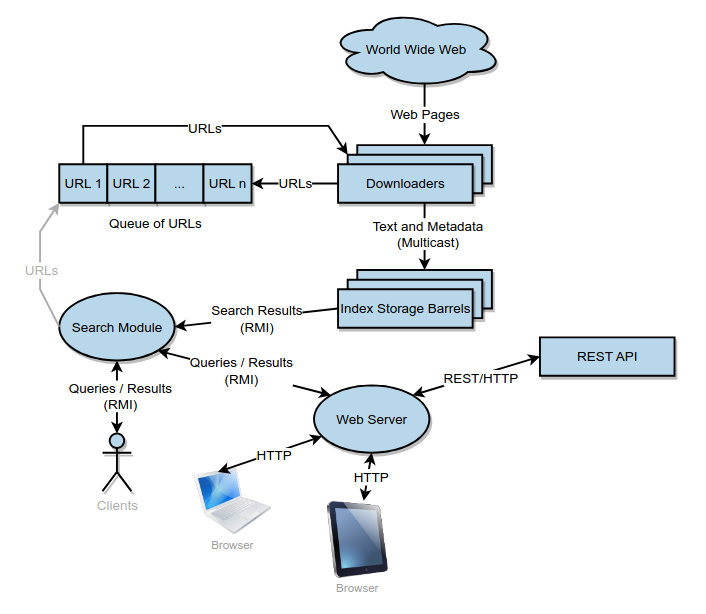

JoaoESmoreira
Googol Engine Project - Distributed System
This project aims to create a distributed web page search engine, inspired by systems such as Google, Bing, and DuckDuckGo. The system implements automatic indexing (web crawling) and search functionalities, maintaining relevant metadata about each page, including its URL, title, and text snippet.
Users can suggest URLs to be indexed, and the crawler recursively follows links within those pages to expand the database. The project focuses on distributed communication, concurrency, data replication, and web integration.
The full repository and documentation can be found here: Googol-Project Repository.
Technologies Used
- Java — Core language for backend and distributed logic.
- Spring Boot — Framework for building the MVC web layer and REST APIs.
- Hacker News API — Example of external REST integration.
- Java RMI — Data access layer for distributed communication.
- WebSockets — Enables real-time asynchronous updates between server and clients.
Objectives
The main goals achieved throughout the project are:
- Developed a web search engine system with a client-server architecture.
- Implemented communication between servers using Multicast Sockets.
- Designed multithreaded servers to ensure concurrent and efficient operations.
- Created a data access layer using Java RMI (Remote Method Invocation).
- Ensured high availability through redundancy and failover mechanisms.
During the second development phase, the following objectives were also achieved:
- Developed a web interface for the application, named Googol.
- Integrated the web interface with the distributed system developed in the first phase.
- Applied Spring Boot and MVC architecture for web development.
- Used WebSockets for asynchronous, real-time client communication.
- Integrated the system with external REST services (e.g., Hacker News API).
Architecture
The architecture is composed of distributed and redundant server nodes responsible for crawling, indexing, and serving search requests.

The web front-end interacts with the backend using REST and WebSocket communication channels, ensuring scalability and real-time updates.
Footer
Copyright © 2025 Joao ES Moreira
The contents of this website are licensed under the Creative Commons Attribution-NoDerivatives 4.0 International License (CC-BY-ND 4.0).
The source code of this website is licensed under the MIT license, and available in GitHub repositor. User-submitted contributions to the site are welcome, as long as the contributor agrees to license their submission with the CC-BY-ND 4.0 license.